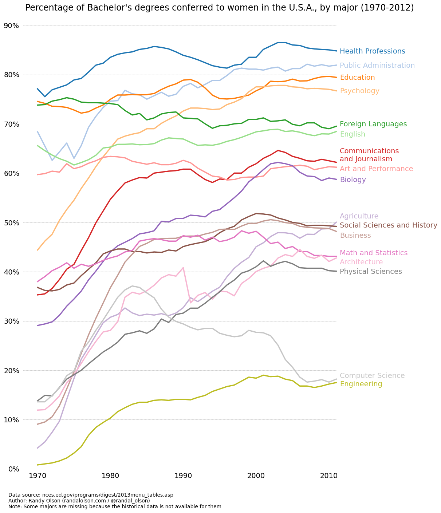

import matplotlib.pyplot as plt
import pandas as pdgender_degree_data = pd.read_csv("http://www.randalolson.com/assets/2014/06/percent-bachelors-degrees-women-usa.csv") tableau20 = [(31, 119, 180), (174, 199, 232), (255, 127, 14), (255, 187, 120),
(44, 160, 44), (152, 223, 138), (214, 39, 40), (255, 152, 150),
(148, 103, 189), (197, 176, 213), (140, 86, 75), (196, 156, 148),
(227, 119, 194), (247, 182, 210), (127, 127, 127), (199, 199, 199),
(188, 189, 34), (219, 219, 141), (23, 190, 207), (158, 218, 229)] # 将RGB值缩放到[0, 1]的范围内
for i in range(len(tableau20)):
r, g, b = tableau20[i]
tableau20[i] = (r/255., g/255., b/255.)fig, ax = plt.subplots(figsize=(12,14),
layout='constrained')
# 去除图像的边框
ax.spines['top'].set_visible(False)
ax.spines['bottom'].set_visible(False)
ax.spines['right'].set_visible(False)
ax.spines['left'].set_visible(False)
# 保证 x 轴刻度处于底部
# 保证 y 轴刻度处于左侧
ax.get_xaxis().tick_bottom()
ax.get_yaxis().tick_left()
# 设置 x y 轴刻度范围，避免不必要的空白
ax.set_ylim([0, 90])
ax.set_xlim([1968, 2014])
# 设置 x y 轴刻度和刻度标签
ax.set_yticks(range(0,91,10),
[str(x) + '%' for x in range(0,91,10)],
fontsize=14)
ax.set_xticks(range(1970,2011,10),
[str(x) for x in range(1970,2011,10)],
fontsize=14)
# 在图上提供刻度线
# 以帮助观众沿着坐标轴刻度进行追踪
# 可以设置为虚线和浅色，以免遮挡主要的数据线
for y in range(10, 91, 10):
ax.plot(range(1968, 2012),
[y] * len(range(1968, 2012)),
"--", lw=0.5, color="black", alpha=0.3)
# 去除 x y 轴刻度上的刻度指示线
plt.tick_params(axis="both", which="both", bottom=False, top=False,
labelbottom=True, left=False, right=False, labelleft=True)
majors = ['Health Professions', 'Public Administration', 'Education', 'Psychology',
'Foreign Languages', 'English', 'Communications\nand Journalism',
'Art and Performance', 'Biology', 'Agriculture',
'Social Sciences and History', 'Business', 'Math and Statistics',
'Architecture', 'Physical Sciences', 'Computer Science',
'Engineering']
# 使用 text() 方法精确添加图例
for rank, column in enumerate(majors):
# Plot each line separately with its own color, using the Tableau 20
# color set in order.
ax.plot(gender_degree_data.Year.values,
gender_degree_data[column.replace("\n", " ")].values,
lw=2.5, color=tableau20[rank])
# Add a text label to the right end of every line. Most of the code below
# is adding specific offsets y position because some labels overlapped.
y_pos = gender_degree_data[column.replace("\n", " ")].values[-1] - 0.5
if column == "Foreign Languages":
y_pos += 0.5
elif column == "English":
y_pos -= 0.5
elif column == "Communications\nand Journalism":
y_pos += 0.75
elif column == "Art and Performance":
y_pos -= 0.25
elif column == "Agriculture":
y_pos += 1.25
elif column == "Social Sciences and History":
y_pos += 0.25
elif column == "Business":
y_pos -= 0.75
elif column == "Math and Statistics":
y_pos += 0.75
elif column == "Architecture":
y_pos -= 0.75
elif column == "Computer Science":
y_pos += 0.75
elif column == "Engineering":
y_pos -= 0.25
ax.text(2011.5, y_pos, column, fontsize=14, color=tableau20[rank])
# title() 方法会将标题居中显示在图上，但并不会居中于整个图形
# 因此使用 text() 方法显示标题
ax.text(1995, 93, "Percentage of Bachelor's degrees conferred to women in the U.S.A."
", by major (1970-2012)", fontsize=17, ha="center")
# 标示数据来源和 copyright
ax.text(1966, -8, "Data source: nces.ed.gov/programs/digest/2013menu_tables.asp"
"\nAuthor: Randy Olson (randalolson.com / @randal_olson)"
"\nNote: Some majors are missing because the historical data "
"is not available for them", fontsize=10)
# bbox_inches='tight' 去除图像边缘的多余空白
# plt.savefig("percent-bachelors-degrees-women-usa.png", bbox_inches="tight")
plt.show()
from scipy.stats import sem